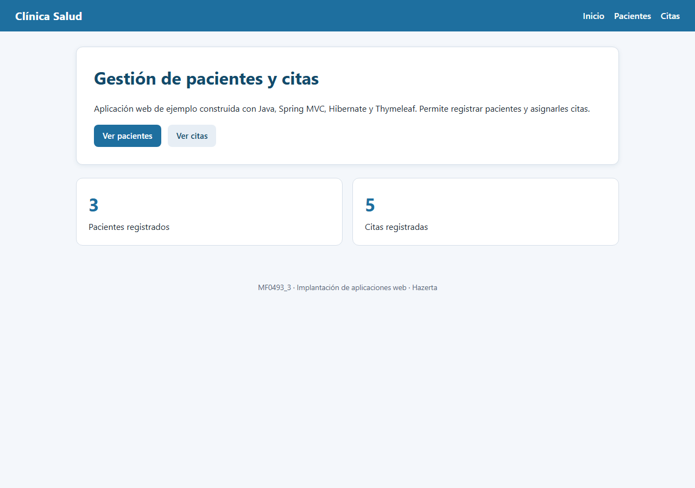
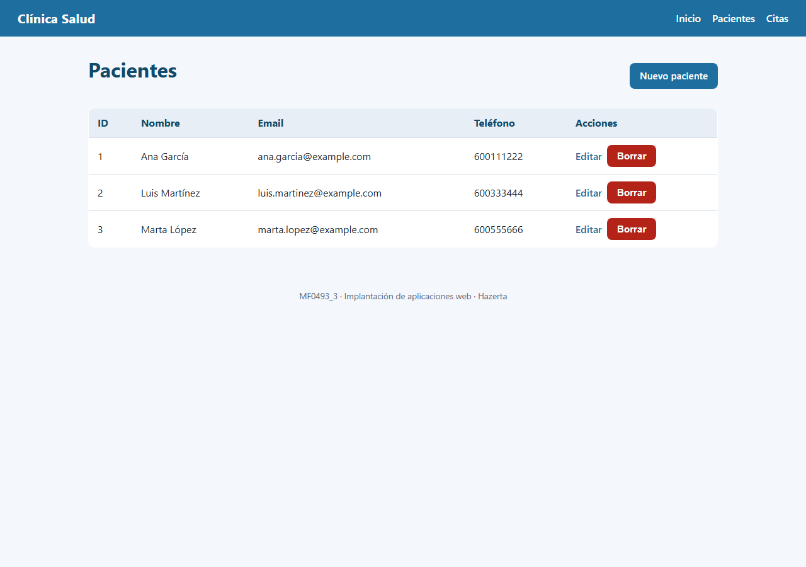
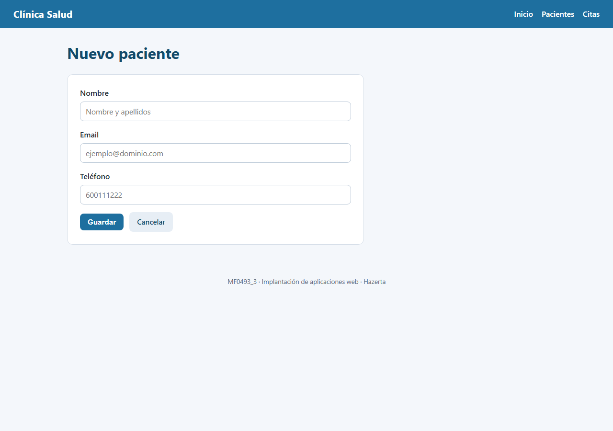
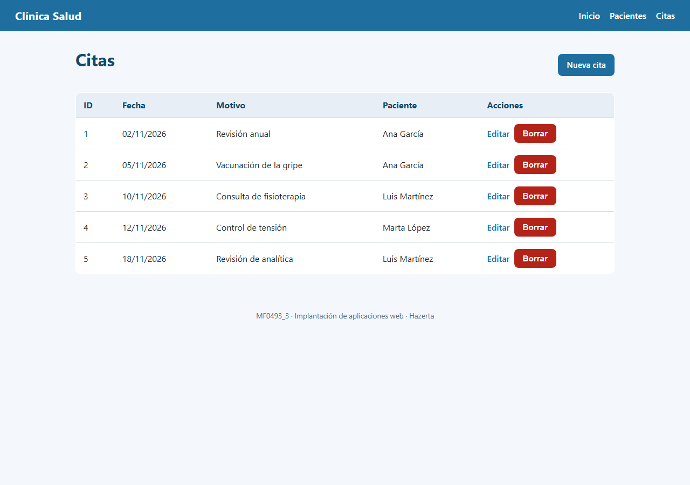
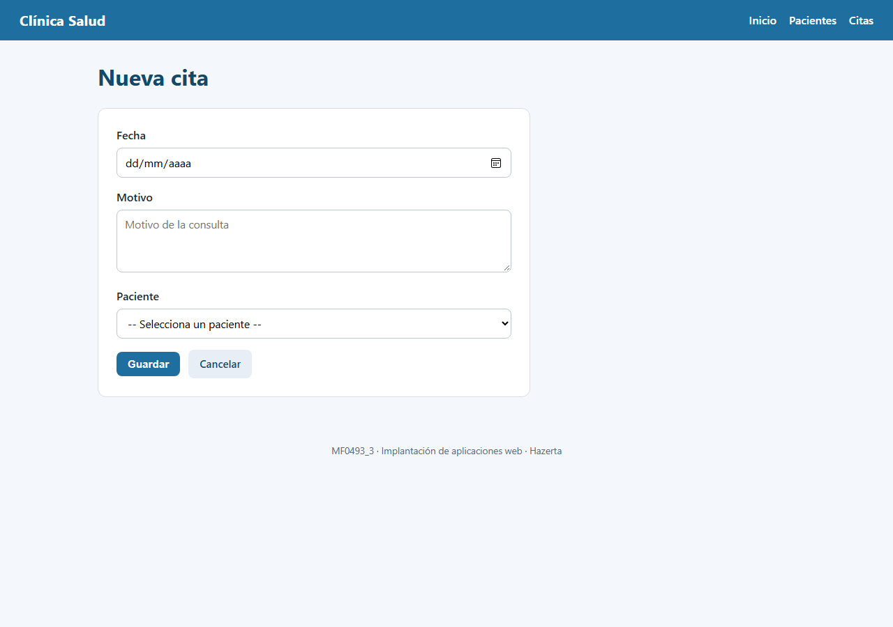

Alumno/a: [ESCRIBE AQUÍ TU NOMBRE Y APELLIDOS]
Módulo: MF0493_3 · Implantación de aplicaciones web
Curso: [ESCRIBE AQUÍ TU CURSO]
Fecha de entrega: [ESCRIBE AQUÍ LA FECHA]
Repositorio Git: [PEGA AQUÍ LA URL DEL REPOSITORIO]
| Nombre y apellidos | [ESCRIBE AQUÍ TU NOMBRE Y APELLIDOS] |
|---|---|
| Módulo | MF0493_3 · Implantación de aplicaciones web |
| Curso | [ESCRIBE AQUÍ TU CURSO] |
| Fecha de entrega | [ESCRIBE AQUÍ LA FECHA] |
| Repositorio Git | [PEGA AQUÍ LA URL DEL REPOSITORIO] |
Clínica Salud es una aplicación web para gestionar los pacientes de una clínica y las citas asociadas a cada uno. La aplicación permite realizar las operaciones básicas de mantenimiento (CRUD) sobre dos entidades relacionadas:
La relación entre ambas entidades es 1:N: un paciente puede tener muchas citas y cada cita pertenece a un único paciente. Al borrar un paciente se eliminan también sus citas gracias a la configuración en cascada de Hibernate.
La interfaz está formada por una página de inicio con accesos directos, un listado de pacientes, un listado de citas y un formulario para cada entidad. Todos los formularios validan los datos antes de guardarlos y muestran mensajes de error junto a los campos incorrectos.
| Tecnología | Uso en el proyecto |
|---|---|
| Java 17 | Lenguaje de programación de la aplicación. |
| Spring Boot 3.3.5 | Arranque automático, servidor embebido y configuración. |
| Spring MVC | Capa web: controladores, rutas y vistas. |
| Hibernate / JPA | Mapeo objeto-relacional de las entidades. |
| Spring Data JPA | Repositorios con CRUD completo. |
| Thymeleaf | Plantillas HTML con datos dinámicos. |
| H2 | Base de datos en memoria para el entorno de prácticas. |
| Maven | Gestión de dependencias, compilación, pruebas y empaquetado. |
| JUnit 5 / Mockito / MockMvc | Pruebas unitarias y de integración. |
| Git | Control de versiones con commits descriptivos. |
La base de datos tiene dos tablas relacionadas mediante la clave foránea
cita.paciente_id.
| Tabla | Entidad | Relación |
|---|---|---|
paciente | Paciente | @OneToMany(mappedBy = "paciente") |
cita | Cita | @ManyToOne + @JoinColumn(name = "paciente_id") |
clinica/
├── pom.xml
├── arrancar.bat
├── probar.bat
├── empaquetar.bat
├── ejecutar_jar.bat
├── LEEME_ALUMNO.txt
├── src/
│ ├── main/
│ │ ├── java/es/hazerta/clinica/
│ │ │ ├── ClinicaApplication.java
│ │ │ ├── model/
│ │ │ │ ├── Paciente.java
│ │ │ │ └── Cita.java
│ │ │ ├── repository/
│ │ │ │ ├── PacienteRepository.java
│ │ │ │ └── CitaRepository.java
│ │ │ ├── service/
│ │ │ │ ├── PacienteService.java
│ │ │ │ └── CitaService.java
│ │ │ ├── controller/
│ │ │ │ ├── HomeController.java
│ │ │ │ ├── PacienteController.java
│ │ │ │ └── CitaController.java
│ │ │ └── exception/
│ │ │ ├── RecursoNoEncontradoException.java
│ │ │ └── GlobalExceptionHandler.java
│ │ └── resources/
│ │ ├── application.properties
│ │ ├── schema.sql
│ │ ├── data.sql
│ │ ├── static/css/estilos.css
│ │ └── templates/
│ │ ├── index.html
│ │ ├── error.html
│ │ ├── error/404.html
│ │ ├── error/500.html
│ │ ├── pacientes/lista.html
│ │ ├── pacientes/formulario.html
│ │ ├── citas/lista.html
│ │ └── citas/formulario.html
│ └── test/java/es/hazerta/clinica/
│ ├── ClinicaApplicationTests.java
│ ├── PacienteControllerTest.java
│ ├── CitaControllerTest.java
│ ├── PacienteServiceTest.java
│ └── CitaServiceTest.java
└── documentacion/
├── DOCUMENTACION.html
├── Apellidos_Nombre_Documentacion.pdf
└── capturas/*.png
El esquema se crea con schema.sql y los datos de prueba se cargan con
data.sql. La configuración está en application.properties:
spring.datasource.url=jdbc:h2:mem:clinica;DB_CLOSE_DELAY=-1 spring.jpa.hibernate.ddl-auto=none spring.sql.init.mode=always spring.sql.init.encoding=UTF-8 spring.h2.console.enabled=true server.port=8080
DROP TABLE IF EXISTS cita;
DROP TABLE IF EXISTS paciente;
CREATE TABLE paciente (
id BIGINT AUTO_INCREMENT PRIMARY KEY,
nombre VARCHAR(100) NOT NULL,
email VARCHAR(120) NOT NULL,
telefono VARCHAR(30)
);
CREATE TABLE cita (
id BIGINT AUTO_INCREMENT PRIMARY KEY,
fecha DATE NOT NULL,
motivo VARCHAR(200) NOT NULL,
paciente_id BIGINT NOT NULL,
CONSTRAINT fk_cita_paciente
FOREIGN KEY (paciente_id) REFERENCES paciente (id)
);
INSERT INTO paciente (nombre, email, telefono) VALUES
('Ana García', 'ana.garcia@example.com', '600111222'),
('Luis Martínez', 'luis.martinez@example.com', '600333444'),
('Marta López', 'marta.lopez@example.com', '600555666');
INSERT INTO cita (fecha, motivo, paciente_id) VALUES
('2026-11-02', 'Revisión anual', 1),
('2026-11-05', 'Vacunación de la gripe', 1),
('2026-11-10', 'Consulta de fisioterapia', 2),
('2026-11-12', 'Control de tensión', 3),
('2026-11-18', 'Revisión de analítica', 2);
La aplicación sigue una arquitectura por capas:
| Método | Ruta | Acción |
|---|---|---|
| GET | / | Página de inicio con contadores. |
| GET | /pacientes | Listado de pacientes. |
| GET | /pacientes/nuevo | Formulario de alta de paciente. |
| GET | /pacientes/editar/{id} | Formulario de edición de paciente. |
| POST | /pacientes/guardar | Guarda o actualiza un paciente. |
| POST | /pacientes/borrar/{id} | Borra un paciente y sus citas. |
| GET | /citas | Listado de citas. |
| GET | /citas/nuevo | Formulario de alta de cita. |
| GET | /citas/editar/{id} | Formulario de edición de cita. |
| POST | /citas/guardar | Guarda o actualiza una cita. |
| POST | /citas/borrar/{id} | Borra una cita. |
@Entity
@Table(name = "paciente")
public class Paciente {
@Id
@GeneratedValue(strategy = GenerationType.IDENTITY)
private Long id;
private String nombre;
private String email;
private String telefono;
@OneToMany(mappedBy = "paciente", cascade = CascadeType.ALL, orphanRemoval = true)
private List<Cita> citas = new ArrayList<>();
}
@Entity
@Table(name = "cita")
public class Cita {
@Id
@GeneratedValue(strategy = GenerationType.IDENTITY)
private Long id;
private LocalDate fecha;
private String motivo;
@ManyToOne(fetch = FetchType.EAGER, optional = false)
@JoinColumn(name = "paciente_id", nullable = false)
private Paciente paciente;
}
La validación se realiza en la capa de servicio y devuelve un mapa de errores por campo:
| Campo | Regla de validación |
|---|---|
| Paciente · nombre | Obligatorio, entre 2 y 100 caracteres. |
| Paciente · email | Obligatorio, formato válido y no repetido. |
| Paciente · teléfono | Opcional; solo números, espacios, + y -. |
| Cita · fecha | Obligatoria y con formato de fecha válido. |
| Cita · motivo | Obligatorio, entre 3 y 200 caracteres. |
| Cita · paciente | Debe seleccionarse un paciente existente. |
Cuando hay errores, el formulario se vuelve a mostrar con los datos introducidos y un mensaje
junto a cada campo incorrecto. Para los errores de recurso no encontrado (por ejemplo, editar
una cita que ya no existe) se muestra una página 404 controlada, y para
cualquier fallo inesperado una página 500. La gestión centralizada se realiza
con @ControllerAdvice y @ExceptionHandler.
El proyecto incluye 22 pruebas que se ejecutan con probar.bat
(Maven + JUnit 5). Todas pasan correctamente:
[INFO] Tests run: 4, Failures: 0, Errors: 0, Skipped: 0 -- CitaControllerTest [INFO] Tests run: 4, Failures: 0, Errors: 0, Skipped: 0 -- CitaServiceTest [INFO] Tests run: 2, Failures: 0, Errors: 0, Skipped: 0 -- ClinicaApplicationTests [INFO] Tests run: 5, Failures: 0, Errors: 0, Skipped: 0 -- PacienteControllerTest [INFO] Tests run: 7, Failures: 0, Errors: 0, Skipped: 0 -- PacienteServiceTest [INFO] Tests run: 22, Failures: 0, Errors: 0, Skipped: 0 [INFO] BUILD SUCCESS
| Clase de prueba | Tipo | Qué comprueba |
|---|---|---|
ClinicaApplicationTests | Integración | Arranque, carga de datos y relación cita-paciente. |
PacienteControllerTest | Integración (MockMvc) | Listado, alta, validación, edición y borrado de pacientes. |
CitaControllerTest | Integración (MockMvc) | Listado, alta, validación y borrado de citas. |
PacienteServiceTest | Unidad (Mockito) | Validaciones y lógica de negocio de pacientes. |
CitaServiceTest | Unidad (Mockito) | Validaciones y asociación de citas con pacientes. |
app.jar generado en target/.java -jar app.jar
http://localhost:8080.Ctrl + C en la terminal.
No es necesario instalar Maven ni copiar el código fuente: el JAR contiene la aplicación y todas
sus dependencias. La base de datos H2 se crea en memoria al arrancar y se carga con los datos de
data.sql.
empaquetar.bat (equivale a: mvn package -DskipTests)
El resultado es target/app.jar, listo para ejecutar en cualquier equipo con Java 17.





El proyecto está versionado con Git. El repositorio incluye commits descriptivos que reflejan la evolución del trabajo:
Paciente y Cita con relación 1:N.URL del repositorio: [PEGA AQUÍ LA URL DEL REPOSITORIO]
Apellidos_Nombre_MF0493_3.zip (proyecto completo sin la carpeta target/).Apellidos_Nombre_Documentacion.pdf (este documento).El proyecto implementa una aplicación web completa con Spring MVC e Hibernate, siguiendo una arquitectura por capas y aplicando validación de formularios, gestión centralizada de errores y pruebas automáticas. La relación 1:N entre pacientes y citas permite comprobar el funcionamiento del mapeo objeto-relacional y de las operaciones CRUD sobre ambas entidades.
El uso de Maven y Git facilita la construcción reproducible del proyecto y el seguimiento de los
cambios. El empaquetado en un único app.jar permite desplegar la aplicación en
cualquier equipo con Java 17 de forma sencilla.